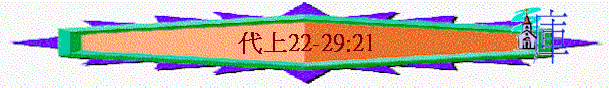

|
神 的 揀 選 與 人 的 尋 求 |
|||||||
|
從選民譜系中的超越看神的揀選 |
從猶大王朝中的興衰看人的尋求 |
||||||
|
神的子民之譜系 |
揀選君王之譜系 |
十二支派之譜系 |
被據歸回之名單 |
掃羅王朝 |
大衛王朝 |
所羅門王朝 |
南國譜王朝 |
|
代上１－９：３４ |
代上９：３５－代下３６ |
||||||
二.從猶大王朝中的興衰看人的尋求(代上9:35-代下36)
2.大衛王朝à第一個合神心意的王(11-29)
A.大衛的成功(11-20)
B.大衛的失敗(21)
C.建殿的預備(22-29:21)
＊啟發：若今日我們要建立神的家，需要甚麼預備？
a.領袖的預備(22)
(1)大衛---在艱難中仍盡力預備
(A)竭力預備
22:2 大衛吩咐聚集住以色列地的外邦人，從其中派石匠鑿石頭，要建造 神的殿。
22:3 大衛預備許多鐵做門上的釘子和鉤子，又預備許多銅，多得無法可稱；
22:4 又預備無數的香柏木，因為西頓人和泰爾人給大衛運了許多香柏木來。
22:14 我在困難之中為耶和華的殿預備了金子十萬他連得，銀子一百萬他連得，銅和鐵多得無法可稱；我也預備了木頭、石頭，你還可以增添。
～預備巧匠
～預備材料
～預備金銀
(B)抓住機會
22:5 大衛說：「我兒子所羅門還年幼嬌嫩，要為耶和華建造的殿宇必須高大輝煌，使名譽榮耀傳遍萬國；所以我要為殿預備材料。」於是，大衛在未死之先預備的材料甚多。
～在未死之先，大衛雖不能建殿，但他卻為殿預備材料。
(C)擺上很多
22:16 並有無數的金銀銅鐵。你當起來辦事，願耶和華與你同在。」
(2)所羅門---在應許中要剛強作工
22:6 大衛召了他兒子所羅門來，囑咐他給耶和華─以色列的 神建造殿宇，
(A)神的選召
22:8 只是耶和華的話臨到我說：『你流了多人的血，打了多次大仗，你不可為我的名建造殿宇，因為你在我眼前使多人的血流在地上。
22:9 你要生一個兒子，他必作太平的人；我必使他安靜，不被四圍的仇敵擾亂。他的名要叫所羅門（就是太平的意思）。他在位的日子，我必使以色列人平安康泰。
22:10 他必為我的名建造殿宇。他要作我的子；我要作他的父。他作以色列王；我必堅定他的國位，直到永遠。』
～大衛一生打了行多仗，曾流了多人的血，所以他不能建神聖的聖殿，但所羅門卻不同，他作王的時候，國家安泰，沒有戰亂，他的手未曾流人血，他治理的時代如他的名一樣，滿有太平，所以神從起初已選了所羅門建聖殿了。
(B)父的祝願
22:11 我兒啊，現今願耶和華與你同在，使你亨通，照他指著你說的話，建造耶和華─你 神的殿。
22:12 但願耶和華賜你聰明智慧，好治理以色列國，遵行耶和華─你 神的律法。
(C)父的勉勵---當剛強作工
22:13 你若謹守遵行耶和華藉摩西吩咐以色列的律例典章，就得亨通。你當剛強壯膽，不要懼怕，也不要驚惶。
22:16 並有無數的金銀銅鐵。你當起來辦事，願耶和華與你同在。」
(3)眾首領---在平穩中要同心建殿
22:17 大衛又吩咐以色列的眾首領幫助他兒子所羅門，說：
22:18 「耶和華─你們的 神不是與你們同在嗎？不是叫你們四圍都平安嗎？因他已將這地的居民交在我手中，這地就在耶和華與他百姓面前制伏了。
22:19 現在你們應當立定心意，尋求耶和華─你們的 神；也當起來建造耶和華 神的聖所，好將耶和華的約櫃和供奉 神的聖器皿都搬進為耶和華名建造的殿裏。
b.事奉人員的分配(23-26)
＊啟發：分配事奉人員作主的工有甚麼準則？
(1)選立建殿的王
23:1 大衛年紀老邁，日子滿足，就立他兒子所羅門作以色列的王。
(2)分配事奉的人
23:2
大衛招聚以色列的眾首領和祭司利未人。
23:3
利未人從三十歲以外的都被數點，他們男丁的數目共有三萬八千；
23:4
其中有二萬四千人管理耶和華殿的事，有六千人作官長和士師，
23:5
有四千人作守門的，又有四千人用大衛所做的樂器頌讚耶和華
(A)分配利未人
(a)事奉者的譜系
23:6 大衛將利未人革順、哥轄、米拉利的子孫分了班次。
23:7 革順的子孫有拉但和示每。
23:12 哥轄的兒子是暗蘭、以斯哈、希伯倫、烏薛共四人。
23:21 米拉利的兒子是抹利、母示。抹利的兒子是以利亞撒、基士。
(b)事奉者的標準
23:24 以上利未子孫作族長的，照著男丁的數目，從二十歲以外，都辦耶和華殿的事務。
民4:2
「你從利未人中，將哥轄子孫的總數，照他們的家室、宗族，
民4:3
從三十歲直到五十歲，凡前來任職、在會幕裏辦事的，全都計算。
～在民4:3中在會幕任職的年齡從三十歲開始，但到了大衛時代，則改了二十歲以外，可能當時管聖殿的事甚多，要更多人手。
(c)事奉者的職責
23:28
他們的職任是服事亞倫的子孫，在耶和華的殿和院子，並屋中辦事，潔淨一切聖物，就是辦 神殿的事務，
23:29
並管理陳設餅，素祭的細麵，或無酵薄餅，或用盤烤，或用油調和的物，又管理各樣的升斗尺度；
23:30
每日早晚，站立稱謝讚美耶和華，
23:31
又在安息日、月朔，並節期，按數照例，將燔祭常常獻給耶和華；
23:32
又看守會幕和聖所，並守耶和華吩咐他們弟兄亞倫子孫的，辦耶和華殿的事。
～服事祭司
～管理聖物
～稱讚 神
～獻上祭物
～看守聖所
(B)分配祭司
(a)祭司的譜系
24:1
亞倫子孫的班次記在下面：亞倫的兒子是拿答、亞比戶、以利亞撒、以他瑪。
24:2
拿答、亞比戶死在他們父親之先，沒有留下兒子；故此，以利亞撒、以他瑪供祭司的職分。
24:3
以利亞撒的子孫撒督和以他瑪的子孫亞希米勒，同著大衛將他們的族弟兄分成班次。
～主要是以利亞撒及以他瑪供的子孫作祭司的職分，以利亞撒的子孫撒督和以他瑪的子孫亞希米勒將他們的族弟兄分成班次
(b)二十四族長
24:4 以利亞撒子孫中為首的比以他瑪子孫中為首的更多，分班如下：以利亞撒的子孫中有十六個族長，以他瑪的子孫中有八個族長；
(c)二十四班次
24:5
都掣籤分立，彼此一樣。在聖所和 神面前作首領的有以利亞撒的子孫，也有以他瑪的子孫。
24:6
作書記的利未人拿坦業的兒子示瑪雅在王和首領，與祭司撒督、亞比亞他的兒子亞希米勒，並祭司利未人的族長面前記錄他們的名字。在以利亞撒的子孫中取一族，在以他瑪的子孫中取一族。
24:7
掣籤的時候，第一掣出來的是耶何雅立，第二是耶大雅，
24:18
第二十三是第來雅，第二十四是瑪西亞。
24:19
這就是他們的班次，要照耶和華─以色列的 神藉他們祖宗亞倫所吩咐的條例進入耶和華的殿辦理事務。
(C)其他分配
24:20
利未其餘的子孫如下：暗蘭的子孫裏有書巴業；書巴業的子孫裏有耶希底亞。
24:31
他們在大衛王和撒督，並亞希米勒與祭司利未人的族長面前掣籤，正如他們弟兄亞倫的子孫一般。各族的長者與兄弟沒有分別。
分班次
(D)分配歌唱的
(a)歌唱的人選
25:1
大衛和眾首領分派亞薩、希幔，並耶杜頓的子孫彈琴、鼓瑟、敲鈸、唱歌（原文是說預言；本章同）。他們供職的人數記在下面：
25:2
亞薩的兒子撒刻、約瑟、尼探雅、亞薩利拉都歸亞薩指教，遵王的旨意唱歌。
25:3
耶杜頓的兒子基大利、西利、耶篩亞、哈沙比雅、瑪他提雅、示每共六人，都歸他們父親耶杜頓指教，彈琴，唱歌，稱謝，頌讚耶和華。
25:4
希幔的兒子布基雅、瑪探雅、烏薛、細布業、耶利摩、哈拿尼雅、哈拿尼、以利亞他、基大利提、羅幔提•以謝、約施比加沙、瑪羅提、何提、瑪哈秀；
25:5
這都是希幔的兒子，吹角頌讚。希幔奉 神之命作王的先見。 神賜給希幔十四個兒子，三個女兒，
25:6
都歸他們父親指教，在耶和華的殿唱歌、敲鈸、彈琴、鼓瑟，辦 神殿的事務。亞薩、耶杜頓、希幔都是王所命定的。
25:7
他們和他們的弟兄學習頌讚耶和華；善於歌唱的共有二百八十八人
～主要是亞薩、希幔，並耶杜頓的子孫
～他們是分別是跟亞薩、希幔，並耶杜頓學習，在耶和華的殿唱歌、敲鈸、彈琴、鼓瑟，辦 神殿的事務。
～特別提及希幔，他不單是歌唱的人，也是先見
～歌唱的人也是善於歌唱的
(b)歌唱的班次
25:8
這些人無論大小，為師的、為徒的，都一同掣籤分了班次。
25:9
掣籤的時候，第一掣出來的是亞薩的兒子約瑟。第二是基大利；他和他弟兄並兒子共十二人。
25:31
第二十四是羅幔提•以謝；他和他兒子並弟兄共十二人。
(E)分配守門的
～利未人分屬三個家族：可拉族的米施利米雅（1～2節）、米拉利族的何薩（10節），和俄別以東家族（4節）
(a)
守門的子孫
26:1
守門的班次記在下面：可拉族亞薩的子孫中，有可利的兒子米施利米雅。
26:2
米施利米雅的長子是撒迦利亞，次子是耶疊，三子是西巴第雅，四子是耶提聶，
26:4
俄別•以東的長子是示瑪雅，次子是約薩拔，三子是約亞，四子是沙甲，五子是拿坦業，
13:14
神的約櫃在俄別•以東家中三個月，耶和華賜福給俄別•以東的家和他一切所有的。
26:10
米拉利子孫何薩有幾個兒子：長子是申利，他原不是長子，是他父親立他作長子。
(b)按班的分配
26:12
這些人都是守門的班長，與他們的弟兄一同在耶和華殿裏按班供職。
26:13
他們無論大小，都按著宗族掣籤分守各門。
26:14
掣籤守東門的是示利米雅；他的兒子撒迦利亞是精明的謀士，掣籤守北門。
26:15
俄別•以東守南門，他的兒子守庫房。
26:16
書聘與何薩守西門，在靠近沙利基門、通著往上去的街道上，班與班相對。
26:17
每日東門有六個利未人，北門有四個，南門有四個，庫房有兩個，又有兩個輪班替換。
(F)分配掌府庫的
26:20
利未子孫中有亞希雅掌管 神殿的府庫和聖物的府庫。
～亞希雅有他們的弟兄意思，神殿的府庫是從人的奉獻而來，聖物的府庫則為戰利品的儲存處，都是分別歸於神的。
(a)革順族管理聖殿的奉獻和器皿
26:21
革順族、拉但子孫裏，作族長的是革順族拉但的子孫耶希伊利。
26:22
耶希伊利的兒子西坦和他兄弟約珥掌管耶和華殿裏的府庫。
26:24
摩西的孫子、革舜的兒子細布業掌管府庫。
(b)暗蘭族管理分別為聖的器物材料
26:26
這示羅密和他的弟兄掌管府庫的聖物，就是大衛王和眾族長、千夫長、百夫長，並軍長所分別為聖的物。
26:27
他們將爭戰時所奪的財物分別為聖，以備修造耶和華的殿。
26:28
先見撒母耳、基士的兒子掃羅、尼珥的兒子押尼珥、洗魯雅的兒子約押所分別為聖的物都歸示羅密和他的弟兄掌管。
～撒母耳任士師後，曾打敗非利士人，這裡所指的可能是那時的戰利品。
(G)分配作官長與士師的
26:29
以斯哈族有基拿尼雅和他眾子作官長和士師，管理以色列的外事。
26:32
耶利雅的弟兄有二千七百人，都是壯士，且作族長；大衛王派他們在呂便支派、迦得支派、瑪拿西半支派中辦理 神和王的事。
～外事是指聖殿之外的事務；士師應是審判官，而官長是他們手下的執法官員。
～而從以上的分配，我們也看到一些原則：
按需要與重要的原則－－＞用最多的人手
按揀選與恩賜的原則－－＞有不同的崗位
按公平與不息的原則－－＞有掣籤與輪班
c.眾百姓的參予(27-29:21)
(1)本身的職務
(A)有服事王的軍長
27:1
以色列人的族長、千夫長、百夫長，和官長都分定班次，每班是二萬四千人，週年按月輪流，替換出入服事王。
27:2
正月第一班的班長是撒巴第業的兒子雅朔班；他班內有二萬四千人。
27:5
三月第三班的班長（原文是軍長；下同）是祭司耶何耶大的兒子比拿雅；他班內有二萬四千人。
27:15
十二月第十二班的班長是俄陀聶族尼陀法人黑玳；他班內有二萬四千人。
～以色列人的族長、千夫長、百夫長，和官長都按班次，週年按月輪流服事王
～大衛的軍隊有二十八萬八千人，分成十二隊，每隊二萬四千人，每隊每年輪流服役一個月。班長原文是軍長
(B)有管理支派之領袖
27:16
管理以色列眾支派的記在下面：管呂便人的是細基利的兒子以利以謝；管西緬人的是瑪迦的兒子示法提雅；
27:17
管利未人的是基母利的兒子哈沙比雅；管亞倫子孫的是撒督；
27:18
管猶大人的是大衛的一個哥哥以利戶，管以薩迦人的是米迦勒的兒子暗利；
27:22
管但人的是耶羅罕的兒子亞薩列。以上是以色列眾支派的首領。
27:23
以色列人二十歲以內的，大衛沒有記其數目；因耶和華曾應許說，必加增以色列人如天上的星那樣多。
27:24
洗魯雅的兒子約押動手數點，當時耶和華的烈怒臨到以色列人；因此，沒有點完，數目也沒有寫在大衛王記上。
(C)有掌管王產業的官員
27:25
掌管王府庫的是亞疊的兒子押斯馬威。掌管田野城邑村莊保障之倉庫的是烏西雅的兒子約拿單。
27:26
掌管耕田種地的是基綠的兒子以斯利。
27:27
掌管葡萄園的是拉瑪人示每。掌管葡萄園酒窖的是實弗米人撒巴底。
27:28
掌管高原橄欖樹和桑樹的是基第利人巴勒•哈南。掌管油庫的是約阿施。
27:29
掌管沙崙牧放牛群的是沙崙人施提賚。掌管山谷牧養牛群的是亞第賚的兒子沙法。
27:30
掌管駝群的是以實瑪利人阿比勒。掌管驢群的是米崙人耶希底亞。掌管羊群的是夏甲人雅悉。
27:31
這都是給大衛王掌管產業的。
(D)有王的謀士
27:32
大衛的叔叔約拿單作謀士；這人有智慧，又作書記。哈摩尼的兒子耶歇作王眾子的師傅。
27:33
亞希多弗也作王的謀士。亞基人戶篩作王的陪伴。
27:34
亞希多弗之後，有比拿雅的兒子耶何耶大和亞比亞他接續他作謀士。約押作王的元帥。
(2)神家的承擔
28:1
大衛招聚以色列各支派的首領和輪班服事王的軍長，與千夫長、百夫長，掌管王和王子產業牲畜的，並太監，以及大能的勇士，都到耶路撒冷來。
(A)建殿異象
(a)神的心意
28:2
大衛王就站起來，說：「我的弟兄，我的百姓啊，你們當聽我言，我心裏本想建造殿宇，安放耶和華的約櫃，作為我 神的腳凳；我已經預備建造的材料。
28:3
只是 神對我說：『你不可為我的名建造殿宇；因你是戰士，流了人的血。』
28:6
耶和華對我說：『你兒子所羅門必建造我的殿和院宇；因為我揀選他作我的子，我也必作他的父。
(b)人要遵行
28:8
現今在耶和華的會中，以色列眾人眼前所說的，我們的 神也聽見了。你們應當尋求耶和華─你們 神的一切誡命，謹守遵行，如此你們可以承受這美地，遺留給你們的子孫，永遠為業。
28:9
「我兒所羅門哪，你當認識耶和華─你父的 神，誠心樂意地事奉他；因為他鑒察眾人的心，知道一切心思意念。你若尋求他，他必使你尋見；你若離棄他，他必永遠丟棄你。
28:10
你當謹慎，因耶和華揀選你建造殿宇作為聖所。你當剛強去行。
(B)聖所的樣式
28:11
大衛將殿的遊廊、旁屋、府庫、樓房、內殿，和施恩所的樣式指示他兒子所羅門，
28:12
又將被靈感動所得的樣式，就是耶和華 神殿的院子、周圍的房屋、殿的府庫，和聖物府庫的一切樣式都指示他；
28:13
又指示他祭司和利未人的班次與耶和華殿裏各樣的工作，並耶和華殿裏一切器皿的樣式，
28:14
以及各樣應用金器的分兩和各樣應用銀器的分兩，
28:18
精金香壇的分兩，並用金子做基路伯（原文是用金子做車式的基路伯）；基路伯張開翅膀，遮掩耶和華的約櫃。
28:19
大衛說：「這一切工作的樣式都是耶和華用手劃出來使我明白的。」
(C)共同的協助
(a)神的同在
28:20
大衛又對他兒子所羅門說：「你當剛強壯膽去行！不要懼怕，也不要驚惶。因為耶和華 神就是我的 神，與你同在；他必不撇下你，也不丟棄你，直到耶和華殿的工作都完畢了。
(b)人的幫助
28:21
有祭司和利未人的各班，為要辦理 神殿各樣的事，又有靈巧的人在各樣的工作上樂意幫助你；並有眾首領和眾民一心聽從你的命令。」
(D)甘心的奉獻
(a)王的榜樣
29:1
大衛王對會眾說：「我兒子所羅門是 神特選的，還年幼嬌嫩；這工程甚大，因這殿不是為人，乃是為耶和華 神建造的。
29:2
我為我 神的殿已經盡力，預備金子做金器，銀子做銀器，銅做銅器，鐵做鐵器，木做木器，還有紅瑪瑙可鑲嵌的寶石，彩石和一切的寶石，並許多漢白玉。
29:3
且因我心中愛慕我 神的殿，就在預備建造聖殿的材料之外，又將我自己積蓄的金銀獻上，建造我 神的殿
(b)百姓的獻上
29:6
於是，眾族長和以色列各支派的首領、千夫長、百夫長，並監管王工的官長，都樂意獻上。
29:7
他們為 神殿的使用獻上金子五千他連得零一萬達利克，銀子一萬他連得，銅一萬八千他連得，鐵十萬他連得。
29:8
凡有寶石的都交給革順人耶歇，送入耶和華殿的府庫。
29:9
因這些人誠心樂意獻給耶和華，百姓就歡喜，大衛王也大大歡喜。
～達利克是一種波斯幣制。作者用當時等值的通用幣制來說明古代黃金的價值，五千他連得約等於170公噸，一萬達利克約等於84公斤。銀子一萬他連得約等於340公噸，銅一萬八千他連得和鐵十萬他連得約各等於610公噸和3450公噸，數量的確巨大，五千他連得約六百萬安士（187.5噸或170公噸），一萬達利克約二千九百六十安士（185磅或84千克）。[1]
(3)大衛的歡呼
(A)讚美神萬物都是從神而來
29:10 所以，大衛在會眾面前稱頌耶和華說：「耶和華─我們的父，以色列的 神是應當稱頌，直到永永遠遠的！
29:11 耶和華啊，尊大、能力、榮耀、強勝、威嚴都是你的；凡天上地下的都是你的；國度也是你的，並且你為至高，為萬有之首。
29:12 豐富尊榮都從你而來，你也治理萬物。在你手裏有大能大力，使人尊大強盛都出於你。
(B)感恩百姓們竟能如此奉獻
29:16 耶和華─我們的 神啊，我們預備這許多材料，要為你的聖名建造殿宇，都是從你而來，都是屬你的。
29:17 我的 神啊，我知道你察驗人心，喜悅正直；我以正直的心樂意獻上這一切物。現在我喜歡見你的民在這裏都樂意奉獻與你。
(C)懇求神堅定他們所作的工
29:18 耶和華─我們列祖亞伯拉罕、以撒、以色列的 神啊，求你使你的民常存這樣的心思意念，堅定他們的心歸向你，
29:19 又求你賜我兒子所羅門誠實的心，遵守你的命令、法度、律例，成就這一切的事，用我所預備的建造殿宇。」
29:20 大衛對全會眾說：「你們應當稱頌耶和華─你們的 神。」於是會眾稱頌耶和華─他們列祖的 神，低頭拜耶和華與王。
D.真神的賜福(29:22-30)
a.賜福所羅門－萬事亨通，得大尊榮
29:22 他們奉耶和華的命再膏大衛的兒子所羅門作王，又膏撒督作祭司。
29:23 於是所羅門坐在耶和華所賜的位上，接續他父親大衛作王，萬事亨通；以色列眾人也都聽從他。
29:24 眾首領和勇士，並大衛王的眾子，都順服所羅門王。
29:25 耶和華使所羅門在以色列眾人眼前甚為尊大，極其威嚴，勝過在他以前的以色列王。
～所羅門在亞多尼雅想謀位時而第一次被膏立的(王上1:32-40)，這次是他第二次在眾人面前被膏的。
～神使所羅門在以色列眾人眼前甚為尊大，也使他萬事亨通。
b.賜福大衛 －日子滿足，得享豐富
29:26 耶西的兒子大衛作以色列眾人的王，
29:27 作王共四十年：在希伯崙作王七年，在耶路撒冷作王三十三年。
29:28 他年紀老邁，日子滿足，享受豐富、尊榮，就死了。他兒子所羅門接續他作王。
29:29 大衛王始終的事都寫在先見撒母耳的書上和先知拿單並先見迦得的書上。
29:30 他的國事和他的勇力，以及他和以色列並列國所經過的事都寫在這書上。